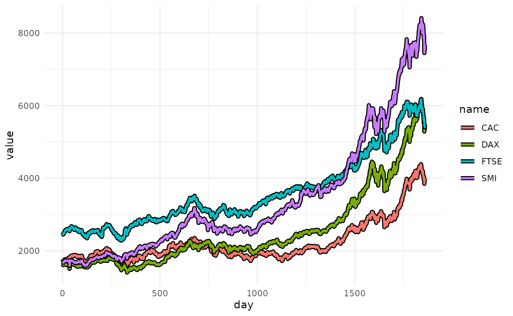
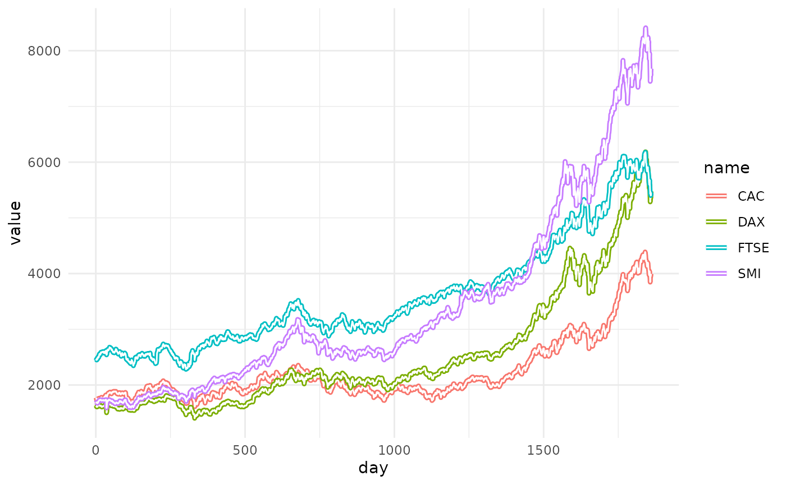
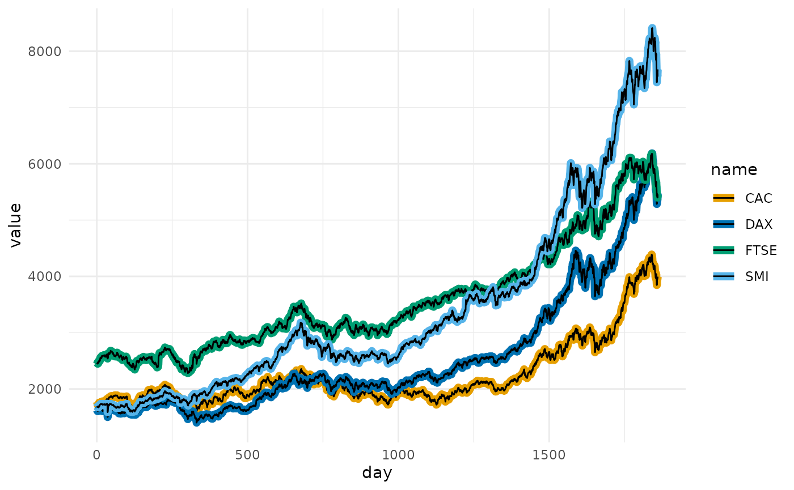
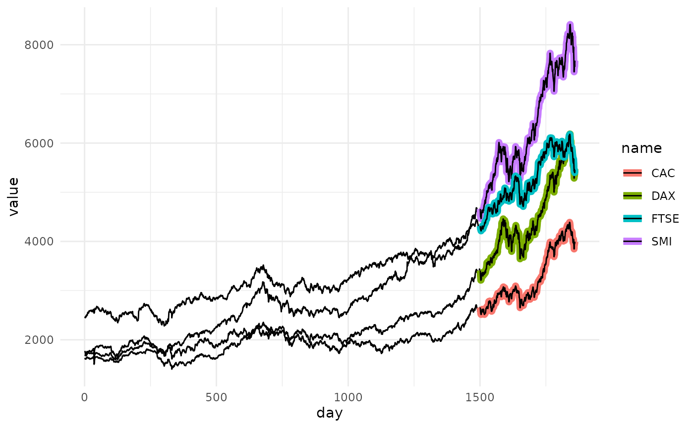
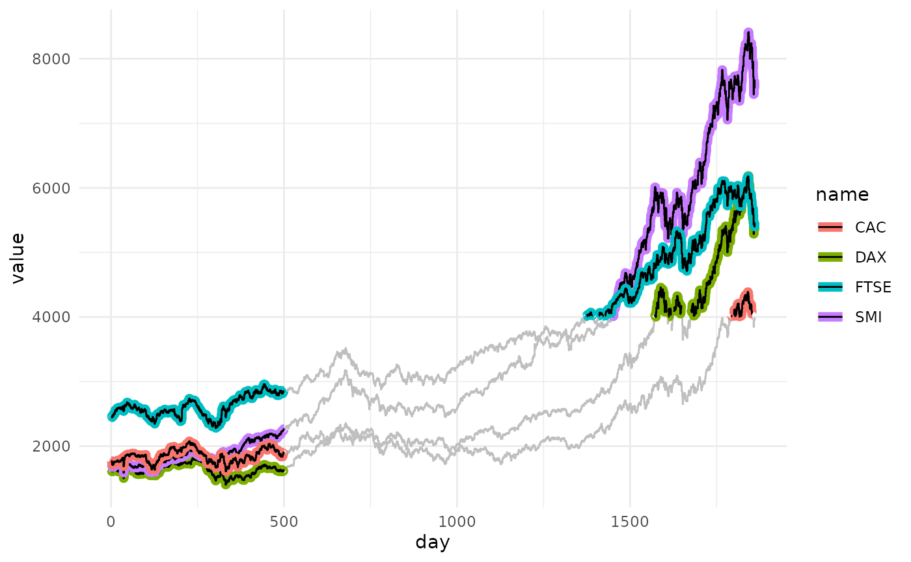
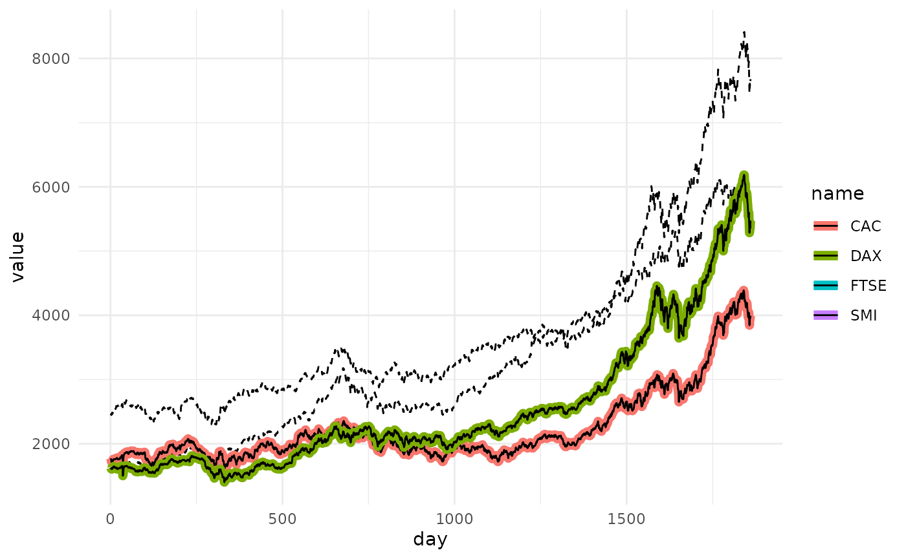
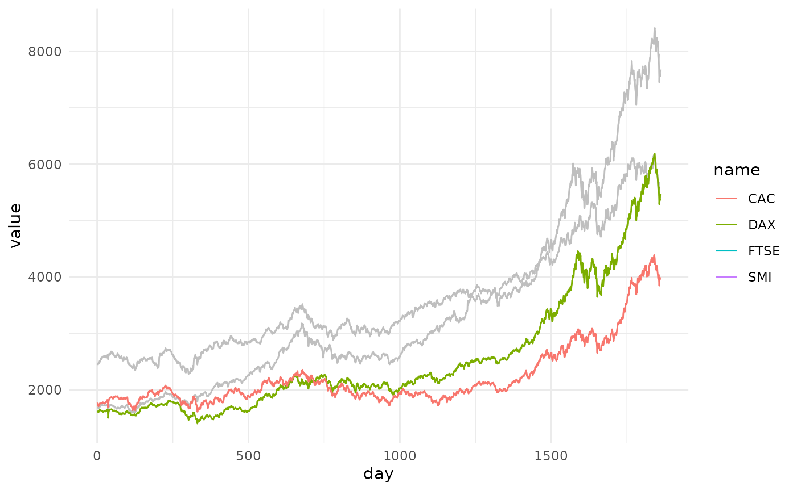

Basic Usage
geom_path_trace(), geom_line_trace(), and geom_step_trace() are similar to ggplot2::geom_path(), ggplot2::geom_line(), and ggplot2::geom_step(), but also include the ability to highlight data points of interest. This is particularly useful when working with dense datasets that are prone to overplotting. These geoms accept normal ggplot2 graphical parameters with some modifications. fill controls the color of the center line, color controls the outline color, and stroke controls outline width, similar to how filled shapes are modified for other ggplot2 geoms. Additional parameters including size, alpha, linetype, linejoin, lineend and linemitre are also accepted.
library(ggplot2)
library(ggtrace)
p <- ggplot(
stocks,
aes(day, value, fill = name)
) +
theme_minimal()
p +
geom_line_trace(
color = "black",
size = 1,
stroke = 0.5,
linetype = 1,
alpha = 1
)
Aesthetics
Like other ggplot2 geoms, variables can be mapped to aesthetic attributes to modify the outline appearance.
p <- ggplot(
stocks,
aes(day, value, color = name)
) +
theme_minimal()
p +
geom_line_trace(stroke = 1)
Aesthetics can be further modified using the ggplot2 scale_* functions.
clrs <- c(
CAC = "#E69F00",
DAX = "#0072B2",
FTSE = "#009E73",
SMI = "#56B4E9"
)
p +
geom_line_trace(stroke = 1) +
scale_color_manual(values = clrs)
Position
The “position” of the outline can be modified with the trace_position parameter. This can be “all” or a predicate selecting the data points to outline. By default all groups are outlined.
If a predicate is passed to trace_position, it must evaluate to TRUE or FALSE within the context of the input data.
p <- ggplot(
stocks,
aes(day, value, color = name)
) +
theme_minimal()
p +
geom_line_trace(
trace_position = day > 1500,
stroke = 1
)
The appearance of background lines can be modified by passing a named list of parameters to the background_params argument.
p +
geom_line_trace(
trace_position = day < 500 | value > 4000,
stroke = 1,
background_params = list(color = NA, fill = "grey75")
)
Here we only highlight names where the second letter is “A”.
p +
geom_line_trace(
trace_position = grepl("^[A-Z]A", name),
stroke = 1,
background_params = list(color = NA, linetype = 2)
)
Outlines can be removed by setting color to NA.
p <- ggplot(
stocks,
aes(day, value, fill = name)
) +
theme_minimal()
p +
geom_line_trace(
trace_position = grepl("^[A-Z]A", name),
color = NA,
background_params = list(fill = "grey75")
)